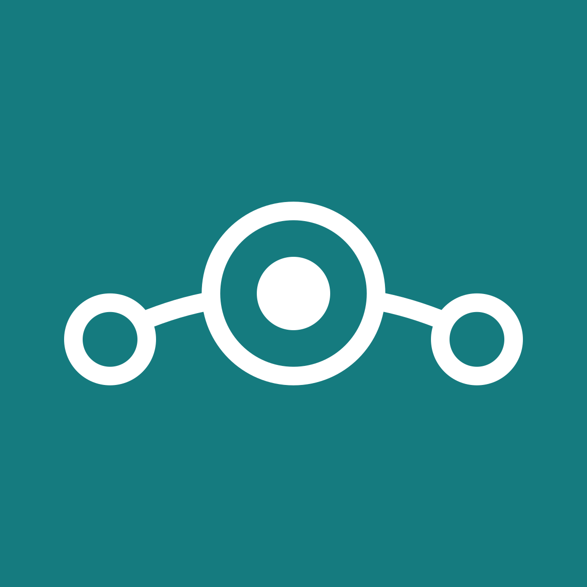

This section will cover what to look for when choosing a custom ROM for your device as well as a few reccomendations.
Development status
When finding a ROM it is almost always better to go with an "official" release as these are more often than not more reliable, up to date, and stable than unofficial releases. Additionally, you should check that a ROM is updated regularly so that it receives regular security updates and fixes.
Privacy policy
It is important to carefully consider the privacy policy of a ROM you are considering using. These may cover what outside connections the ROM will make (such as to Google), what information is shared, and how included software handles user data. If you are using a ROM without a clear privacy policy/statement, you can't be sure that your data is not being misused.
Google services
By default, Android includes Google Play Services. Googple Play services is a collection of APIs that allow for apps to interface with various Google services (for example Google Maps, Google Sign In, and Google Cloud Messaging). This is an obvious privacy concern as information, such as the devices location, are collected and transmitted to Google via the APIs included in Google Play Services. It is highly reccomended to use an alternative to replace the services provided by Google, as missing them can result in many apps breaking.
Open source
The only way to truly know if any software respects your privacy is if its source code is available freely to view. Without this, you are only able trust the developers word regarding what data is collected and how it is used. Futhermore, open source ROMs often have the advatage of being more stable and feature rich than closed source alternatives as more people are working on debugging, updating, and adding to it.
Examples
The following example ROMs are in my opinion the most stable and privacy respecting alternatives to using stock Android.
LineageOS
You have likely noticed LineageOS being mentioned multiple times in this guide, and thats for good reason. It was initially forked from the CyanogenMod and is based on AOSP. This ROM is regarded by many to be the most stable and secure privacy focused ROM, with daily updates and wide official device support. Because of this, it has been forked into many other popular ROMs such as Replicant (a fully FOSS fork of LineageOS), and /e/ (a fork with microG implemented by default). In addition, it includes additional privacy features includig Privacy guard that provides the user the ability to control the permissions given to apps individually and review how permissions are being used.
Stable and up to date
Large number of supported devices
Open source
Additional privacy features
Google services not included
Google Play Services alternative not provided by default
Less privacy/security levels on lower levels
LineageOS for microG
As the name may imply, LineageOS for microG is a fork of LineageOS with the microG installed by default to replace functionality that would ususally be implemented by Google Play Services. The repository is maintained by the creators or microG and includes signature spoofing, making it easier to get microG working than the official LineageOS build. This fork supports almost all devices with offical LineageOS support and is also updated regularly (weekly).
Stable and up to date
Large number of supported devices
Open source
Additional privacy features
Google services not included
microG preinstalled with signature spoofing
Slighly less frequent updates than the official build
Less privacy/security levels on lower levels
GrapheneOS
Previously known as CopperheadOS, GraphineOS has recently become entirely independant after splitting from a former corperate sponsor. This ROM targets the Google Pixel line of phones and emphasises hardening device security with custom privacy and security focused apps (WebView browser, PDF viewer), a hardened kernal, and various other lower level improvements often not found in other ROMs. While this ROM does not include Google services, it is also not possible to implement a replacement such as microG to retain that functionality.
Stable and up to date
Open source
Additional privacy features and apps
Google services not included
Futher privacy/security levels on lower levels
Only supports Google Pixel devices
No way to implement a Google Play Services replacement